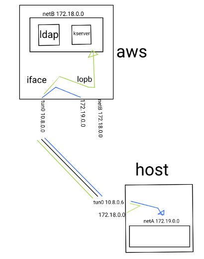

OpenVpn
puerto 1194
/usr/lib/systemd/system/openvpn@.service
/usr/lib/tmpfiles.d/openvpn.conf
...
/usr/share/doc/openvpn/sample/sample-keys
[jorge@pc03 ~]$ tree /etc/openvpn/
➜ ~ ll /usr/share/doc/openvpn/examples/sample-keys
total 84K
-rw-r--r-- 1 root root 2,2K feb 20 2019 ca.crt
-rw-r--r-- 1 root root 3,3K feb 20 2019 client.crt.gz
-rw-r--r-- 1 root root 1,7K feb 20 2019 client.key
-rw-r--r-- 1 root root 424 feb 20 2019 dh2048.pem
-rw-r--r-- 1 root root 3,5K feb 20 2019 server.crt.gz
-rw-r--r-- 1 root root 1,7K feb 20 2019 server.key
...
➜ ~ ll /usr/share/doc/openvpn/examples/sample-config-files
total 68K
-rw-r--r-- 1 root root 3,6K feb 20 2019 client.conf
-rw-r--r-- 1 root root 4,3K feb 20 2019 server.conf.gz
...
Ejemplos Comand line
túnel simple sin cifrar.
➜ ~ sudo openvpn --remote portatil --dev tun1 --ifconfig 10.4.0.2 10.4.0.1 --verb 9
[jorge@pc03 ~]$ sudo openvpn --remote torre --dev tun1 --ifconfig 10.4.0.1 10.4.0.2 --verb 9
13: tun1: <POINTOPOINT,MULTICAST,NOARP,UP,LOWER_UP> mtu 1500 qdisc fq_codel state UNKNOWN group default qlen 100
link/none
inet 10.4.0.1 peer 10.4.0.2/32 scope global tun1
valid_lft forever preferred_lft forever
inet6 fe80::591a:b249:b1bf:89d8/64 scope link stable-privacy
valid_lft forever preferred_lft forever
[jorge@pc03 ~]$ curl 10.4.0.2:13
23 MAR 2020 09:07:36 UTC
túnel host a host clave compertida
➜ ~ sudo openvpn --genkey --secret key
➜ ~ sudo scp key jorge@portatil:
[jorge@pc03 ~]$ ls -l key
-rw-------. 1 jorge jorge 636 mar 23 10:25 key
➜ ~ sudo openvpn --remote portatil --dev tun1 --ifconfig 10.4.0.2 10.4.0.1 --verb 5 --secret key
[jorge@pc03 ~]$ sudo openvpn --remote torre --dev tun1 --ifconfig 10.4.0.1 10.4.0.2 --verb 5 --secret key
[jorge@pc03 ~]$ curl 10.4.0.2:13
23 MAR 2020 09:26:57 UTC
host to host tls public/secret key
En este casi se utiliza el host torre de server y el host portatil de cliente, las claves utilizadas son las proporcionadas por openvpn de ejemplo, nunca utilizarlas en producción.
➜ ~ cd /usr/share/doc/openvpn/examples/sample-keys/
➜ ~ sudo cp dh2048.pem ca.crt client.key client.crt.gz server.crt.gz server.key /home/debian/
➜ ~ scp ca.crt client.* jorge@portatil:
➜ ~ sudo openvpn --remote portatil --dev tun1 --ifconfig 10.4.0.2 10.4.0.1 --verb 5 --tls-server --dh dh2048.pem --ca ca.crt --cert server.crt --key server.key --reneg-sec 60 --verb 5
[jorge@pc03 ~]$ sudo openvpn --remote torre --dev tun1 --ifconfig 10.4.0.1 10.4.0.2 --tls-client --ca ca.crt --cert client.crt --key client.key --reneg-sec 60 --verb 5
[jorge@pc03 ~]$ curl 10.4.0.2:13
23 MAR 2020 09:56:29 UTC
túnel network to network
básicamente es enrrutar la subred creada por un tunel a un gateway externo
may ➜ ~ sudo echo 1 | tee /proc/sys/net/ipv4/ip_forward
june ➜ ~ sudo echo 1 | tee /proc/sys/net/ipv4/ip_forward
may ➜ ~ iptables −A FORWARD −i tun+ −j ACCEPT
june ➜ ~ iptables −A FORWARD −i tun+ −j ACCEPT
may ➜ ~ route add −net 10.0.1.0 netmask 255.255.255.0 gw 10.4.0.2
june ➜ ~ route add −net 10.0.0.0 netmask 255.255.255.0 gw 10.4.0.1
Esquema:
may june
10.4.0.1 route adds 10.4.0.2
+-----+ <-----------+ +----+
| | | |
+-----+ +----------> v----+
|| | |
|| | |
|| OpenS 10.0.1.1 | | OpenS 10.0.0.1
|| tunel | | tunel
|| OpenC 10.0.1.2 | | OpenC 10.0.0.2
+-----+ +----+
| | | |
+-----+ +----+
Server multiuser
Configuración para un servidor, que puede albergar múltiples usuarios con las mismas llaves.
Dominio
El dominio que trae por defecto lo modifico a mi gusto, para simplificar su utilización.
[fedora@aws ~]$ sudo cp /lib/systemd/system/openvpn-server@.service /etc/systemd/system/.
[fedora@aws ~]$ cat /etc/systemd/system/openvpn-server@.service
[Unit]
Description=OpenVPN service for %I hisx
After=syslog.target network-online.target
[Service]
Type=forking
PrivateTmp=true
ExecStartPre=/usr/bin/echo serveri %i %I
PIDFile=/var/run/openvpn-server/%i.pid
ExecStart=/usr/sbin/openvpn --daemon --writepid /var/run/openvpn-server/%i.pid --cd /etc/openvpn/ --config %i.conf
[Install]
WantedBy=multi-user.target
Configuración
Configuración del servidor
[fedora@aws ~]$ cp /usr/share/doc/openvpn/sample/sample-config-files/server.conf .
[fedora@aws ~]$ sudo cp server.conf /etc/openvpn/hisxserver.conf
[fedora@aws ~]$ cat /etc/openvpn/hisxserver.conf
port 1194
proto udp
dev tun
ca /etc/openvpn/keys/ca.crt
cert /etc/openvpn/keys/server.crt
key /etc/openvpn/keys/server.key # This file should be kept secret
dh /etc/openvpn/keys/dh2048.pem
server 10.8.0.0 255.255.255.0
ifconfig-pool-persist ipp.txt
client-to-client
;duplicate-cn
keepalive 10 120
cipher AES-256-CBC
comp-lzo
persist-key
persist-tun
status openvpn-status.log
verb 3
explicit-exit-notify 1
llaves
En este paso se tienen que generar unas claves o utilizar ( solo en entornos de pruebas ) las llaves por defecto existentes en /usr/share/doc/openvpn/sample/sample-key ( No vienen en todas las distribuciones o versiones de las mismas )
[fedora@aws ~]$ tree /etc/openvpn/
/etc/openvpn/
|-- client [error opening dir]
|-- hisxserver.conf
|-- ipp.txt
|-- keys
| |-- ca.crt
| |-- dh2048.pem
| |-- server.crt
| `-- server.key
|-- openvpn-status.log
`-- server [error opening dir]
Para acabar recargo los dominios, ya que lo hemos modificado manualmente y enciendo el server.
[fedora@aws ~]$ sudo systemctl daemon-reload
[fedora@aws ~]$ sudo systemctl start openvpn-server@hisxserver.service
Compruebo que se a creado una nueva interfaz con la red indicada en el dispositivo tun0
[fedora@ip-172-31-82-34 ~]$ ip a s tun0
3: tun0: <POINTOPOINT,MULTICAST,NOARP,UP,LOWER_UP> mtu 1500 qdisc fq_codel state UNKNOWN group default qlen 100
link/none
inet 10.8.0.1 peer 10.8.0.2/32 scope global tun0
valid_lft forever preferred_lft forever
inet6 fe80::20c:58c8:3152:2900/64 scope link stable-privacy
valid_lft forever preferred_lft forever
Host cliente
Configuración
Copio y modifico la configuración de ejemplo proporcionada por openvpn.
➜ ~ sudo cp /usr/share/doc/openvpn/examples/sample-config-files/client.conf /etc/openvpn/client/hisxclient.conf
➜ ~ sudo cat /etc/openvpn/client/hisxclient.conf
client
dev tun
proto udp
# remote server port
remote aws 1194
resolv-retry infinite
nobind
persist-key
persist-tun
ca /etc/openvpn/keys/ca.crt
cert /etc/openvpn/keys/client.crt
key /etc/openvpn/keys/client.key
remote-cert-tls server
cipher AES-256-CBC
comp-lzo
verb 3
llaves
Estas llaves las he extraído del servidor ( estoy utilizando las de por defecto ), todos los clientes tendrán las mismas.
➜ ~ sudo cp ca.crt client.crt client.key /etc/openvpn/keys
➜ ~ sudo chmod 600 /etc/openvpn/keys/*
[sudo] password for jorge:
/etc/openvpn/
├── client
│ └── hisxclient.conf
├── keys
│ ├── ca.crt
│ ├── client.crt
│ ├── client.key
│ └── dh2048.pem
└── server
Como es un entorno de pruebas y no tengo resolución al servidor, asigno la resolución en /etc/hosts manualmente.
➜ ~ cat /etc/hosts
127.0.0.1 localhost
127.0.1.1 localhost.localdomain localhost
# The following lines are desirable for IPv6 capable hosts
::1 localhost ip6-localhost ip6-loopback
ff02::1 ip6-allnodes
ff02::2 ip6-allrouters
3.84.58.174 aws
Enciendo el dominio del cliente por defecto con la configuración hisxclient
➜ ~ sudo systemctl start openvpn-client@hisxclient
Compruebo que conecta y crea la nueva interficie tun0
➜ ~ ip a s tun0
10: tun0: <POINTOPOINT,MULTICAST,NOARP,UP,LOWER_UP> mtu 1500 qdisc pfifo_fast state UNKNOWN group default qlen 100
link/none
inet 10.8.0.6 peer 10.8.0.5/32 scope global tun0
valid_lft forever preferred_lft forever
inet6 fe80::ae4:71c6:32ce:c922/64 scope link stable-privacy
valid_lft forever preferred_lft forever
Conectividad entre redes
Teniendo el servidor y cliente en marcha, en este paso se conecta la red netB en la ami de amazon con el host local y la red netA del host local con la ami de amazon.

# enciendo dockers ldap y kserver en aws con la red 'netB 172.18.0.0'
[fedora@aws ~]$ sudo docker run --rm --name ldap.edt.org -h ldap.edt.org --net netB -d jorgepastorr/ldapserver19:final
[fedora@aws ~]$ sudo docker run --rm --name kserver.edt.org -h kserver.edt.org --net netB -d jorgepastorr/k19:kserver
# enciendo docker local con red 'netA 172.19.0.0'
➜ ~ docker run --rm --name nethost -h nethost --net netA -d jorgepastorr/net19:nethost
# desde local enruto todo el trafico de la red 172.18.0.0/16 hacia el tunel vpn 10.8.0.6
# la red 172.18.0.0 no tiene que existir en local
# 10.8.0.6 es la ip local del tunel vpn
➜ ~ sudo ip route add 172.18.0.0/16 via 10.8.0.6
➜ ~ ip route show
default via 192.168.88.1 dev enp3s0 proto dhcp metric 100
10.8.0.0/24 via 10.8.0.5 dev tun0
10.8.0.5 dev tun0 proto kernel scope link src 10.8.0.6
172.17.0.0/16 dev docker0 proto kernel scope link src 172.17.0.1 linkdown
172.18.0.0/16 via 10.8.0.6 dev tun0
172.19.0.0/16 dev br-2d7ff7224245 proto kernel scope link src 172.19.0.1
# permito pc local enrutar y abro peticiones del tunel vpn
➜ ~ echo 1 |sudo tee /proc/sys/net/ipv4/ip_forward
➜ ~ sudo iptables -A FORWARD -i tun+ -j ACCEPT
# desde aws enruto todo el trafico de la red 172.19.0.0/16 hacia el tunel vpn 10.8.0.2
# la red 172.19.0.0 no tiene que existir en aws
[fedora@aws ~]$ sudo ip route add 172.19.0.0/16 via 10.8.0.2
[fedora@aws ~]$ sudo ip r
default via 172.31.80.1 dev eth0 proto dhcp metric 100
10.8.0.0/24 via 10.8.0.2 dev tun0
10.8.0.2 dev tun0 proto kernel scope link src 10.8.0.1
172.17.0.0/16 dev docker0 proto kernel scope link src 172.17.0.1 linkdown
172.18.0.0/16 dev br-9202ac48a79d proto kernel scope link src 172.18.0.1
172.19.0.0/16 via 10.8.0.2 dev tun0
172.31.80.0/20 dev eth0 proto kernel scope link src 172.31.92.8 metric 100
# permito aws enrutar y abro peticiones del tunel vpn
[fedora@aws ~]$ echo 1 | sudo tee /proc/sys/net/ipv4/ip_forward
[fedora@aws ~]$ sudo iptables -A FORWARD -i tun+ -j ACCEPT
# Compuebo
# desde local puedo acceder a la base de datos ldap desde el enrtamiento echo de 172.18.0.0 pasando por el tunel vpn y acabando en aws.
➜ ~ ldapsearch -x -LLL -h 172.18.0.2:389 -b 'dc=edt,dc=org' dn
# desde docker local lo mismo con kserver
➜ ~ docker run --net netA --rm -it jorgepastorr/k19:khost
[root@5b295dee370e docker]# cat /etc/hosts
127.0.0.1 localhost
172.19.0.3 5b295dee370e
172.18.0.3 kserver.edt.org kserver
[root@5b295dee370e docker]# kinit pere
Password for pere@EDT.ORG:
[root@5b295dee370e docker]# klist
Ticket cache: FILE:/tmp/krb5cc_0
Default principal: pere@EDT.ORG
Valid starting Expires Service principal
03/24/20 20:11:30 03/25/20 20:11:30 krbtgt/EDT.ORG@EDT.ORG